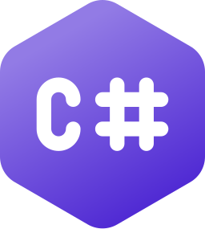
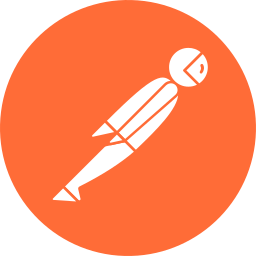

Syncs the YMS with the in-house ERP
A two-way REST API integration on ASP.NET Core, SQL Server and Azure. Data processing ran 35% faster.

C#I own 2 SaaS logistics platforms at Sunrise Plastic Enterprise, a Yard Management System and a container dispatch platform, as technical contact for external partners and five internal departments.

Account work since July 2023
I have onboarded and trained more than 80 external users, resolved over 600 support tickets within SLA and support 2 application rollouts a month. Most tickets close in one to two days.
Sunrise Plastic Enterprise
Technical Account Manager, July 2023 to present.
Texas A&M University
Master of Computer Science, 2021 to 2023.
National Central University
B.S. in Computer Science and Information Engineering, 2017 to 2021.
I reproduce defects, review Windows and Linux logs, and debug API requests in Postman.
An outage hit 30 concurrent users. I deployed a workaround and rolled back the release.
I compared source and destination payloads and fixed format mismatches.
A triage and escalation process ranks repeat issues by frequency.
A two-way REST API integration on ASP.NET Core, SQL Server and Azure. Data processing ran 35% faster.

C#My API guides and FAQs, with Postman examples, let users troubleshoot integrations on their own.

Postman